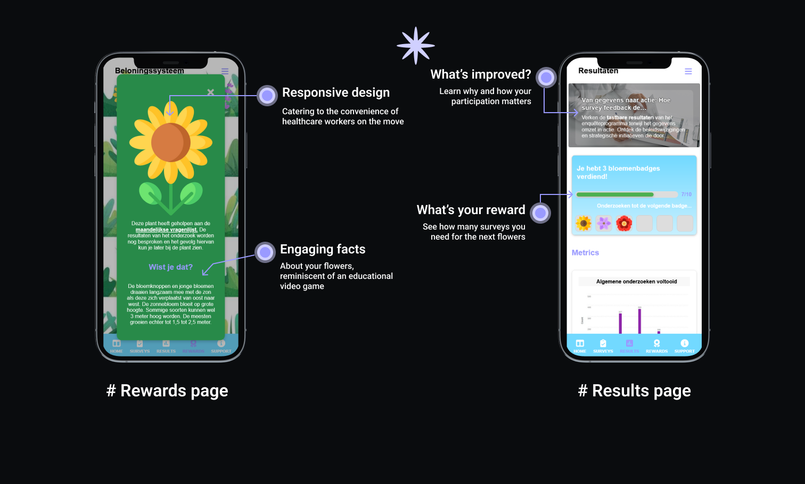
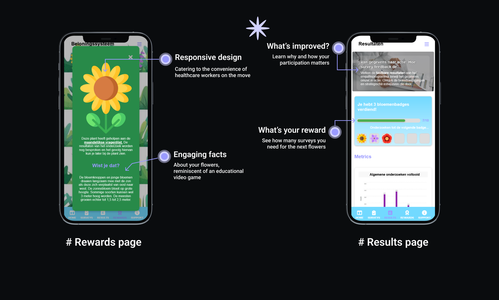

JOINT EFFORTS
Client:
Samen aan Z
Role
Front-End Developer
UX Designer
Duration
5 months
Type
Dashboard (Student Project)
Tech
Overview
The goal of the Samen aan Z project is to address the critical issue of the rising staff shortage in the healthcare industry in the Netherlands and Belgium. With a significant portion of the population aged 50 and above, there is an urgent need to find sustainable solutions for workforce retention.
Goal of the project
The primary objective of the Joint Efforts project is to collect valuable data through surveys, enabling researchers to analyze and identify potential solutions for improving healthcare worker retention. Our focus lies in designing a user-friendly dashboard that not only encourages healthcare workers to participate in surveys but also provides them with insights into how their data contributes to enhancing their working conditions.
Visit Project Website
Challenge & Goals
The healthcare industry faces a substantial staff shortage, and engaging healthcare workers in surveys is a significant challenge. The existing surveys may have usability issues, and there is a need to effectively communicate the importance of participation.
Goals
-
Survey Improvement:
Identify and address issues with the current surveys through usability testing and expert interviews.
-
Importance Communication:
Develop strategies to communicate the significance of surveys to healthcare workers through focus groups, diaries, and probes.
-
Appealing and Engaging Surveys:
Utilize design pattern search and specification to make surveys more appealing and engaging.
-
Dashboard Design:
Conduct a literature study and prototyping to create an aesthetically pleasing and user-friendly dashboard for healthcare workers.
-
Continuous Participation:
Implement paper prototypes, field trials, and A/B testing to increase the likelihood of continued survey participation.
Design Process

Our UX design process for the Joint Efforts project is structured to address the unique challenges posed by the healthcare industry's staff shortage. We've adopted a systematic approach, integrating various research methods, iterative design cycles, and continuous stakeholder engagement. Our process revolves around refining the existing survey system, designing an engaging dashboard, and ensuring seamless collaboration within our interdisciplinary team.
Our journey is ongoing, and we remain committed to refining our designs based on user feedback, ensuring the Joint Efforts project achieves its goal of enhancing healthcare worker retention in the long run.
Research
Introduction
Through stakeholder and expert interviews, coupled with insights from end-users, we navigated the landscape of healthcare professionals' needs. This section unveils the strategic decisions forged through meticulous design research, laying the groundwork for our UX portfolio site. Join us in unraveling the essence of our research, guiding the creation of an impactful user experience.
Main Question
How can we make the existing program more appealing and engaging to healthcare workers?
Subquestions
- What are the issues of the current surveys?
- How do we communicate the importance of the survey to the healthcare workers in the dashboard?
Stakeholder Interview
Key Points
The stakeholders emphasized the need to make surveys more engaging and attractive. Existing challenges include low engagement, uninteresting surveys, and the reliance on email notifications.
Insights
- The dashboard must be engaging without altering the survey structure.
- Consider a mobile app for push notifications.
Expert Interview
Major Improvements
Significant improvements were made considering time constraints and the goal of making surveys user-friendly. Positive feedback is expected at the end of the month.
Key Points
- Consideration of time constraints during survey creation.
- Focus on making surveys more user-friendly.
End-User Interview
Work-Life Insights
The end-user, a healthcare worker since 2004, highlighted work-life challenges and openness to technology. Break times, daily routine, and dealing with staff shortages were discussed.
Technology Adoption
- Openness to technology but not involved in IT decisions.
- Preference for advance notice and open to notifications on various platforms.
Design Research
Problem Statement
The problem addressed is the need for a brand guide to convey the values and message of the project consistently.
Brand Guide Components
- Logo guidelines, color palette, typography, imagery, and tone of voice.
- Choices based on iterative color selection and alignment with healthcare aesthetics.
User Persona
User Journey
Design
Designing for Impact: A Visual Tale
Our mission: crafting a visually compelling and user-centric dashboard that not only addresses the challenges of low survey engagement but sets a new standard for enhancing healthcare worker retention. Through iterative wireframes, dynamic prototypes, and insightful user testing, our journey unfolds—a synthesis of creativity and data-driven refinement, ensuring the Joint Efforts dashboard is not merely a solution but a seamless, engaging experience for healthcare professionals.
Ideation


Wireframes

Our initial wireframes paved the way for high-fidelity interactive prototypes, focusing on essential functionalities and user flows. The iterative development process involved continuous refinement, guided by user-centric principles and insights gathered from stakeholder feedback
Styleguide
To ensure the seamless creation of prototypes and final products, a comprehensive styleguide is essential. This guide communicates the brand's values and messaging effectively. The focus is on understanding common styleguide elements and tailoring them to our project.
Typography
Our choice of typography revolves around readability and adaptability across web and mobile applications. We selected Roboto for its versatility, ensuring a consistent and professional presentation.
Color Palette
It incorporates soft tones such as sky blue, lavender, and turquoise. Chosen for their association with calmness, trust, and professionalism, aligning with the aesthetics of healthcare.
Prototypes: Breathing Life into Ideas
Try it!With wireframes as our compass, we ventured into the realm of prototypes, injecting life into static sketches. Evolving from blueprints to interactive experiences, our prototypes pushed boundaries. Navigational fluidity, engaging visual cues, and a user-centric approach came to life, fostering an environment where participation is not just a task but a journey.


Real Talk: User Testing Insights
User testing brought us back to earth.
Prototype Showcase
Development
Technology Fusion
Angular
Tailwind
Github
Our journey into building the Joint Efforts Healthcare Dashboard involved a strategic fusion of cutting-edge technologies. Angular, our chosen frontend framework, provided the robust architecture needed for seamless user interactions. Tailwind CSS, a utility-first CSS framework, streamlined styling, ensuring a visually appealing and responsive design. The deployment on Netlify guaranteed accessibility for testing, while GitHub orchestrated version control, securing code integrity.
Our Development Journey
Let's embark on a visual journey through the development phase, where every choice was made to enhance the user experience.
 

The Joint Efforts Healthcare Dashboard exemplifies a harmonious blend of functionality and aesthetics. Every pixel, every interaction was meticulously crafted with the end-user in mind. This visual journey through our development process is a testament to our commitment to creating a seamless and engaging experience for healthcare workers, ensuring they feel motivated and empowered in their vital contributions.
Impact:
Revolutionizing Healthcare Work Environments
The Joint Efforts Healthcare Worker Dashboard emerges as a catalyst for positive change in healthcare work environments. The project's impact extends beyond a mere technological upgrade, aiming to revolutionize the daily experiences of healthcare professionals. Let's delve into the transformative journey and the potential future implications.
Motivating Healthcare Workers
The introduction of the rewards system with gamification elements goes beyond aesthetics. It serves as a motivational tool, providing healthcare workers with a tangible representation of their contributions. As healthcare professionals collect virtual plants in their digital garden, they receive not just recognition but also a sense of accomplishment, potentially boosting survey completion rates.
Continuous Improvement and Adaptability
The iterative design and development process, despite resource limitations, established a foundation for continuous improvement. Insights gained from user testing, design iterations, and technology transitions will inform future decisions. The adaptability demonstrated throughout this project positions the Healthcare Worker Dashboard as a living, evolving tool.
Motivating Healthcare Workers
The commitment to a user-centric approach is paramount in healthcare technology. This project, despite challenges, prioritized the user experience. The seamless integration of rewards, consistent design across platforms, and thoughtful adjustments based on user feedback contribute to a healthcare dashboard that aligns with the unique needs and preferences of its users.
Conclusion:
A Vision for Tomorrow
The Joint Efforts Healthcare Worker Dashboard isn't just a technological solution; it's a vision for tomorrow's healthcare landscape. By embracing the challenges and triumphing over constraints, this project showcases the potential of human-centric design in revolutionizing traditionally rigid work environments. The impact extends beyond the screen, aiming to uplift the spirits of healthcare professionals and, in turn, improve the overall quality of healthcare services. As we navigate the complexities of healthcare, this dashboard stands as a testament to the power of innovation, collaboration, and a relentless pursuit of positive impact.